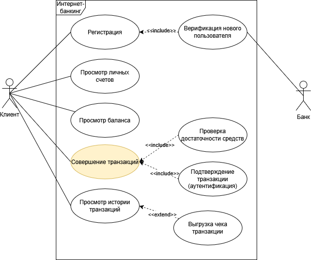
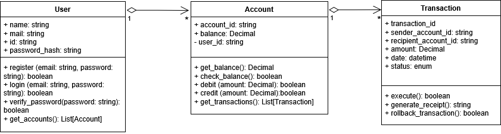
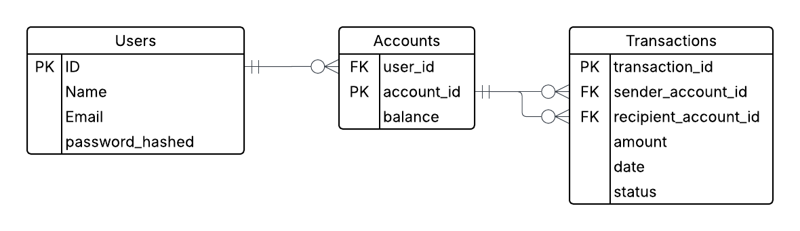
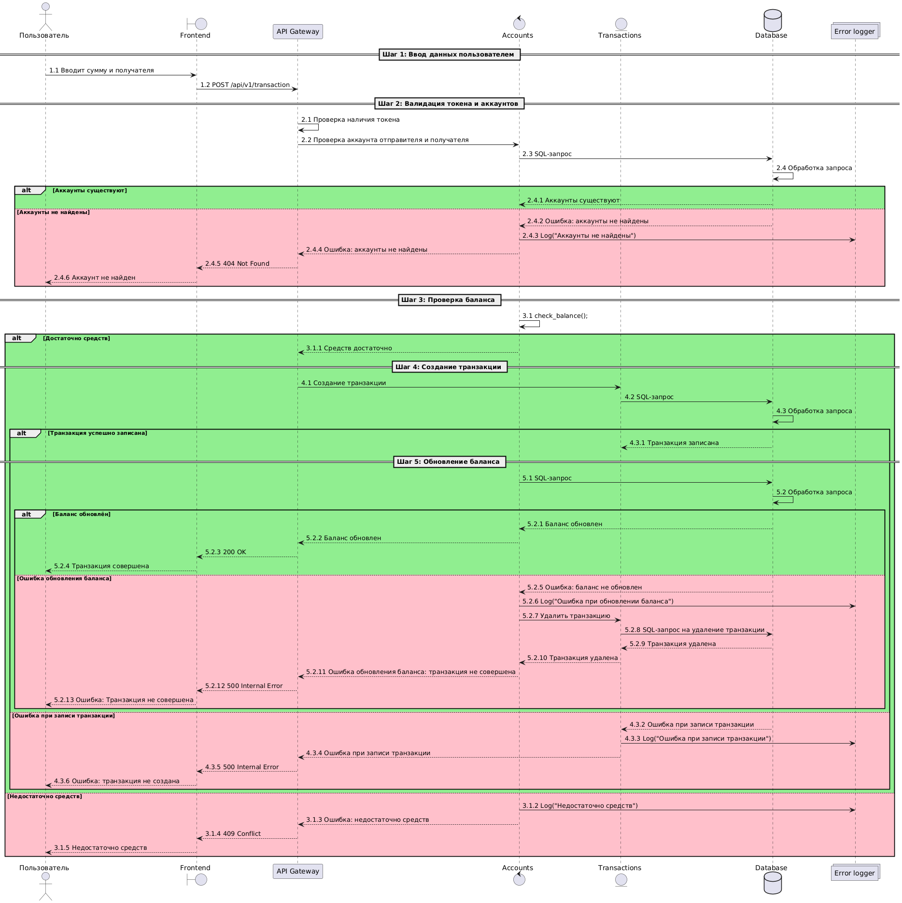

В рамках кейса показывается процесс построения интеграции для сервиса денежных переводов
Инструментарий:
UML
SQL
ER-диаграммы
API
Swagger
Цель: Создание документации для построения интеграции сервиса денежных переводов
Результат: Задокументированный кейс (ER-диаграммы, документация API в Swagger)
В рамках данного проекта рассматривается функциональность сервиса денежных переводов (транзакций). Ниже на Use-case-диаграмме показано взаимодействие этого сервиса с другими сервисами для клиента
В рамках этого сервиса взаимодействуют три основных класса:
1. Пользователи (Users)
2. Аккаунты
3. Транзакции
Ниже на диаграмме классов показаны их атрибуты, методы и взаимосвязи:
На основании этой диаграммы построенна ER-диаграмма и созданы таблицы в базе данных для дальнейшего взаимодействия с интерфейсом сервиса.
Инструментарий LucidChart позволяет сразу экпортировать ER-диаграмму в формате SQL-запросов для формирования таблиц. Для создания необходимых таблиц требуются следующие SQL-запросы:
| Таблица | SQL-запрос |
|---|---|
| USERS | CREATE TABLE users ( ID INT AUTO_INCREMENT, Name VARCHAR(100), Email VARCHAR(255) UNIQUE, password_hashed VARCHAR(255), PRIMARY KEY (ID) ); |
| ACCOUNTS | CREATE TABLE accounts ( account_id INT AUTO_INCREMENT, user_id INT, balance DECIMAL(15, 2) DEFAULT 0.00, PRIMARY KEY (account_id), FOREIGN KEY (user_id) REFERENCES Users(ID) ); |
| TRANSACTIONS | CREATE TABLE transactions ( transaction_id INT AUTO_INCREMENT, sender_account_id INT, recipient_account_id INT, amount DECIMAL(15, 2), date DATETIME DEFAULT CURRENT_TIMESTAMP, status ENUM('PENDING', 'COMPLETED', 'FAILED'), PRIMARY KEY (transaction_id), FOREIGN KEY (sender_account_id) REFERENCES Accounts(account_id), FOREIGN KEY (recipient_account_id) REFERENCES Accounts(account_id) ); |
После описание классов и БД, участвующих в процессе денежных переводов, необходимо описать взаимодействие этих компонентов. Ниже на диаграмме последовательностей показаны основные шаги в процессе денежных переводов.
Детальное описание процесса денежных переводов:
| Основной сценарий поведения |
1.1 Пользователь вводит сумму и получателя 1.2 Фронтенд отправляет API-запрос: POST /api/v1/transaction 2.1 API Gateway проверяет наличия токена (альтернативные варианты для данного этапа вне скоупа этого кейса) 2.2 API Gateway отправляет запрос на проверку отправителя и получателя 2.3 SQL-запрос 2.4 БД обрабатывает запрос 2.4.1 БД возвращает ответ: Аккаунты существуют 3.1 Проверяется достаточность баланса для совершения транзакции: check_balance(); 3.1.1 Средств достаточно для совершения транзакции 4.1 API Gateway отправляет запрос на создание транзакции 4.2 SQL-запроc 4.3 БД обрабатывает запрос 4.3.1 БД возвращает ответ: Транзакция создана 5.1 После совершения транзакции требуется обновить балансы, SQL-запрос 5.2 БД обрабатывает запрос 5.2.1 БД возвращает ответ: Балансы обновлены 5.2.2 - 5.2.4 - Возврат ответа “200 ОК” - Транзакция совершена |
| Альтернативный сценарий: Аккаунты для совершения транзакции не найдены | 2.4.2 БД возвращает ответ: Аккаунты не найдены 2.4.3 Делается запись в лог: Аккаунты не найдены 2.4.4 - 2.4.6 - Возврат ответа “404 Not Found” - Аккаунты не найдены |
| Альтернативный сценарий: Ошибка обновления баланса | 5.2.5 БД возвращает ответ: Ошибка обновления баланса 5.2.6 Делается запись в лог: Ошибка при обновлении баланса 5.2.7 - 5.2.8 Удаление транзакции из БД (SQL-запрос) 5.2.9 - 5.2.10 БД возвращает ответ: Транзакция удалена 5.2.11 - 5.2.13 Возврат ответа “500 Internal Error” - Ошибка: Транзакция прервана |
| Альтернативный сценарий: Ошибка при записи транзакции | 4.3.2 БД возвращает ответ: Ошибка при записи транзакции 4.3.3 Делается запись в лог: Ошибка при записи транзакции 4.3.4 - 4.3.6 Возврат ответа “500 Internal Error” - Ошибка: Транзакция не создана |
| Альтернативный сценарий: Недостаточно средств для совершения транзакции | 3.1.2 Делается запись в лог: Недостаточно средств 3.1.3 - 3.1.5 Возврат ответа “409 Conflict” - Ошибка: недостаточно средств |
| SQL-запросы | 2.3 Проверка аккаунтов получателя и отправителя: SELECT COUNT(*) AS total FROM accounts WHERE user_id IN (:sender_account_id, :recipient_account_id); |
| 4.2 Создание транзакции: INSERT INTO transactions (sender_account_id, recipient_account_id, amount, status) VALUES (:sender_account_id, :recipient_account_id, :amount, :status) |
|
| 5.1 Обновление балансов: BEGIN; UPDATE accounts SET balance = balance - :amount WHERE account_id = :sender_account_id; UPDATE accounts SET balance = balance + :amount WHERE account_id = :recipient_account_id; COMMIT; |
|
| 5.2.7 Удаление транзакции: DELETE FROM transactions WHERE transaction_id = :transaction_id; |
После определения последовательности процесса денежных переводов можно спроектировать API-запросы:
| User-запросы | |
| POST /auth/login | |
| Описание | Логин пользователя |
| Обязательные поля | username, password |
| Пример запроса | { "username": "john", "password": "1234" } |
| Пример ответа | { "token": "jwt-token" } |
| Коды ответа | 200, 400, 401, 500 |
| GET /user/{id} | |
| Описание | Получить профиль |
| Пример ответа | { "id": "u1", "username": "john" } |
| Коды ответа | 200, 401, 500 |
| Accounts-запросы | |
| GET /accounts | |
| Описание | Список аккаунтов |
| Пример ответа | [{ "id":"a1", "account_id":"123" }] |
| Коды ответа | 200, 401, 500 |
| GET /accounts/{id}/balance | |
| Описание | Баланс аккаунта |
| Обязательные поля | id |
| Пример ответа | { "balance":"200.0" } |
| Коды ответа | 200, 401, 404, 500 |
| Transactions-запросы | |
| POST /transactions | |
| Описание | Создание транзакции |
| Обязательные поля | sender_account_id, recipient_account_id, amount |
| Пример запроса | { "sender_account_id": "a1", "recipient_account_id": "a2", "amount": 50.0 } |
| Пример ответа | { "transactionId": "t1" } |
| Коды ответа | 200, 400, 404, 409, 500 |
| GET /transactions/list | |
| Описание | Все транзакции |
| Пример ответа | [{ "id":"t1", "amount":50.0 }] |
| Коды ответа | 200, 401, 500 |
| GET /transactions/{id} | |
| Описание | Детали транзакции |
| Пример ответа | { "id":"t1","amount":50.0,"description":"Payment" } |
| Коды ответа | 200, 401, 404, 500 |
На основе описанных выше эндпоинтов сформирована полная документация в Swagger: скачать .yaml